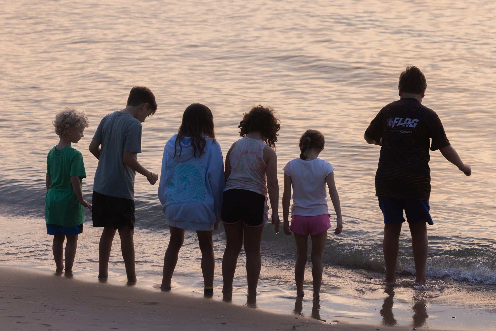
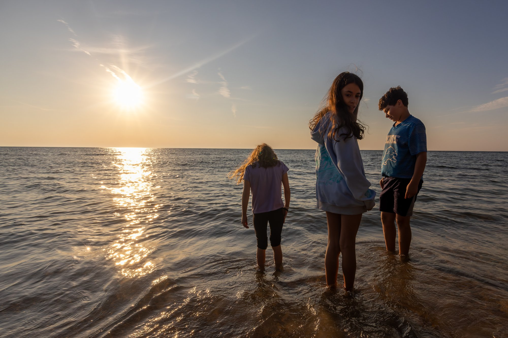
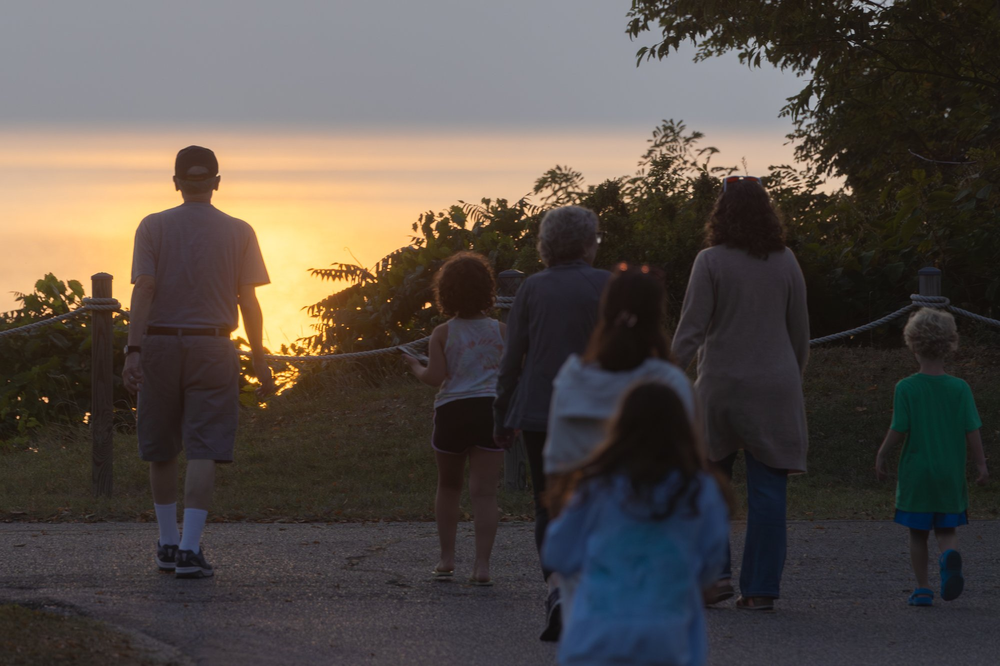
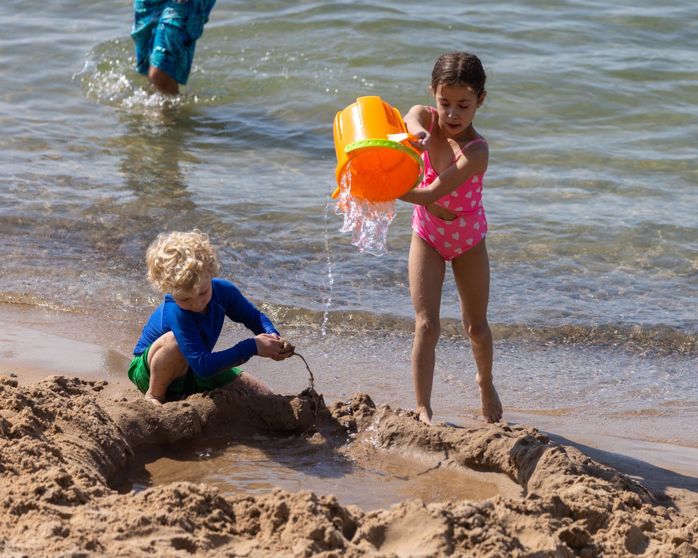

Jonathan's plan, on the system I build for clients. This page updates from me or from the group text, so it always shows the current plan. Anything to add or change, text me.
These flip to DONE as they happen. The Landmark call is the only real bottleneck of the weekend.
| Time | What |
|---|---|
| 10:45 | Depart Ann Arbor. About 2h15m clean; add 30 minutes of holiday cushion. Turnpike route, about $6 in tolls. |
| 1:15 | Late lunch downtown: Cheekz Burgers (215 E Water St) or Shore House Tavern. Both roomy for 14. |
| 2:00 | Split: two adults do the grocery run (Meijer or Kroger on Milan Rd, 10 min). Everyone else walks Jackson Street Pier. |
| 4:00 | Check in at 416 Columbus Ave. Unload. Kids claim beds. |
| 6:45 | Dinner: Clubhouse No. 3 Pizza, two blocks away. Order an hour ahead, walk over, carry it back. |
| 8:00 | Walk to Sandusky Scoops for ice cream. Six minutes. |
| 9:00 | Home. Early night. |
Running late? Skip the sit-down lunch, drive through, go straight to groceries and check-in.
| Time | What |
|---|---|
| 8:00 | Farmers market, three blocks north, 8 to noon. Sleep-inners sleep in. |
| 9:30 | Breakfast at the house from the market haul. |
| 11:00 | Merry-Go-Round Museum, ten-minute walk. Includes a ride on the antique carousel, which runs three times faster than a modern one. Anyone wanting more walks on to the Maritime Museum (shipwrecks, Underground Railroad, hands-on). |
| 12:45 | Lunch: Cheekz Burgers, or Sweet Cheekz Cafe on the water. |
| 2:00 | The big downtime block. Naps, hot tub, board games, kids running feral, adults on the porch. Nothing gets scheduled into this. |
| 3:30 | Optional adult split: CLAG Brewing (one block, beer plus sushi and pho) or Moseley's Rooftop over the bay. Grandparents hold the house. |
| 5:30 | Dinner at Landmark Kitchen and Bar, twelve-minute walk. Get the Lake Erie perch. This is the reservation that matters. |
| 7:05 | One block to Jackson Street Pier. Swings, benches, open water. Sunset around 8. |
| 8:05 | Sandusky Scoops on the walk home. |
Rain plan: both museums are indoors and walkable, and Toft's Dairy (Ohio's oldest) is a ten-minute drive. Dinner is unaffected.

| Time | What |
|---|---|
| 8:30 | Slow start. Big house breakfast, two adults cooking, everyone else out of the kitchen. |
| 10:45 | Drive to Nickel Plate Beach in Huron, 20 minutes east. $7 a car. Sandy, clean, grills, and a boardwalk across the sand, which matters for Grandma and Grandpa. |
| 11:10 | Beach. Cooler lunch on the sand. Swimming, sandcastles, cornhole. |
| 2:30 | Back. Rinse everyone off. |
| 3:15 | Second downtime block. Suitcases start getting staged. |
| 5:00 | Optional adult split: Paddle Bar tiki patio, or CLAG. |
| 6:00 | Cookout at the house. Burgers, brats, corn, watermelon. Easiest meal of the weekend for 14. |
| 7:30 | Cars get loaded with everything but toothbrushes. |
| 8:30 | Kids down. Adults: porch, or Moseley's Rooftop while the grandparents hold the house. |
Cold or rainy: Ghostly Manor (roller rink, laser tag, arcade) burns three happy hours for the 9-to-12 crowd. Cool but dry: Marblehead Lighthouse plus the deer park where you hand-feed them.
| Time | What |
|---|---|
| 7:00 | Up. Coffee, bagels, leftovers. No cooking. |
| 7:45 | Final sweep. Under the beds and in the dryer. |
| 8:00 | Roll. Cars were loaded Sunday night, so the morning is 45 minutes, not two hours. |
| 10:15 | Ann Arbor. |
The weekend is complete without it. Anyone going goes Sunday (Saturday is the worst crowd day of the season), and the park has its own free mile of beach for the 1-to-3 PM break.
Buy online, never at the gate ($105). Online runs $60 to $85 on a holiday Sunday; FunEx resells from about $46; junior tier under 48 inches, senior at 62 and up. Parking $30 to $40 a car, park food $25 to $35 a head, or a cooler in the lot.
Fast Lane: $125-plus per person and roughly doubles the day. Only for a coaster-hungry adult or two.
Height governs everything; 51 versus 52 inches decides the whole day. Measure at home, no shoes, write it down. For whichever kids go:
| Kid | Height | What the day looks like |
|---|---|---|
| Daphne (12) | measure | Almost certainly clears everything. Open with Millennium Force and Magnum at rope drop; Maverick is the calibration ride before Steel Vengeance. |
| Leo (12) | measure | Same plan as Daphne. Top Thrill 2 during a lull, never at 1 PM. |
| Ezra (11) | measure | Likely clears everything too. Sequence matters more than eligibility: build up through GateKeeper before the big two. |
| Healey (9) | measure | The 52-inch line is the whole question. Either way, Millennium Force is only 48 inches and it is the ride a 9-year-old talks about for a year. Gentler than its height suggests. |
| Tess (9) | measure | Same as Healey: Millennium Force is the goal, Gemini is the warm-up, Thunder Canyon soaks everyone on a hot afternoon. |
| Ariel (6) | measure | The 48-inch line decides between two good days. Under it: Camp Snoopy plus everything a riding-along adult unlocks. Over it: Gemini first, the best first big coaster in the park. |
Text a regroup time and place. The park is a long, narrow peninsula; staying together is a fantasy.

The house is four blocks from downtown and a half mile from the water. Jackson Street Pier for sunset, the bay pathway for a morning run, CLAG one block away, and the whole downtown is an open-container district, so a drink can walk between bars legally. Barrel House Saloon has live music and is cash only.
Warm and mostly dry through Friday as of the last check; the weekend itself firms up Wednesday. Rain moves the museums up and adds Ghostly Manor. Real heat moves the beach to 9:30 AM. Cool and windy kills the beach below about 72 and swaps in the lighthouse and the deer park.

Research and plan by Jonathan · page by Noah, on the system he builds for clients
Last updated August 31 · decisions from the weekend land here as they happen